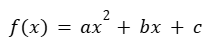
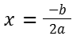

Características de la función cuadrática
Toda función cuadrática de la forma:

tiene una gráfica en forma de parábola. Las principales características que debes conocer son:
- Dirección de la parábola:
- Si a > 0 : se abre hacia arriba (mínimo en el vértice).
- Si a < 0 : se abre hacia abajo (máximo en el vértice).
2. Vértice en la parábola:
Es el punto más alto o más bajo de la curva.
- Su coordenada en x se calcula con:

- Luego se reemplaza en la función para encontrar y.
3. Eje de simetría:
Es la recta vertical que pasa por el vértice:
4. Corte en el eje Y:
se da cuando x = 0. El valor de ƒ(0) = c.
5. Corte en el eje X:
Son los puntos donde la parábola cruza el eje horizontal. El número y ubicación de estos cortes dependerán de los valores de los coeficientes, lo cual veremos a detalle en el siguiente módulo.